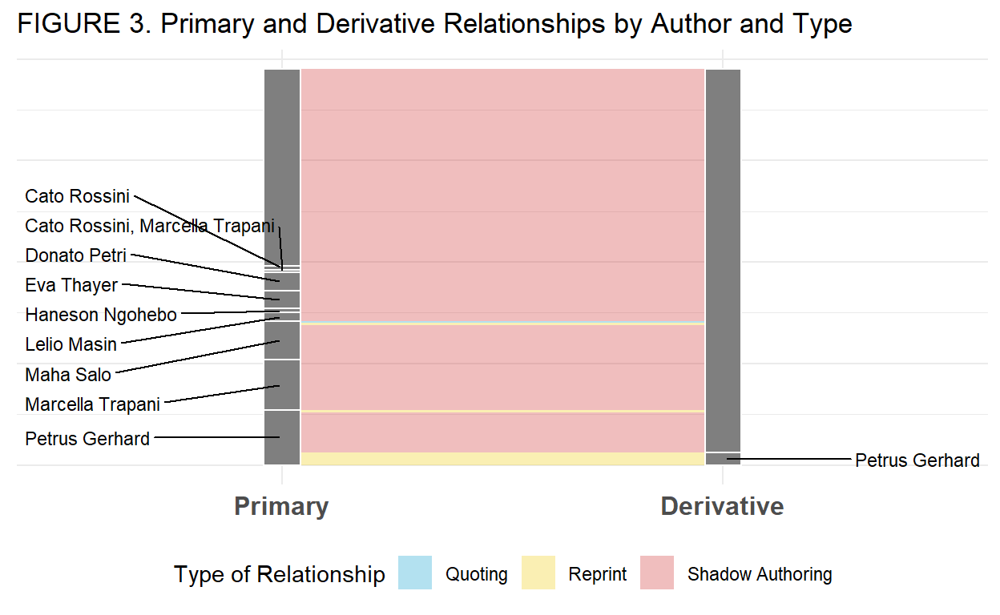
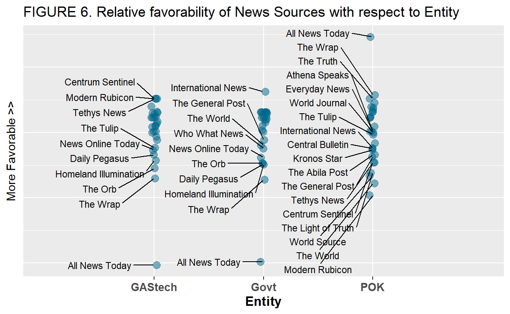
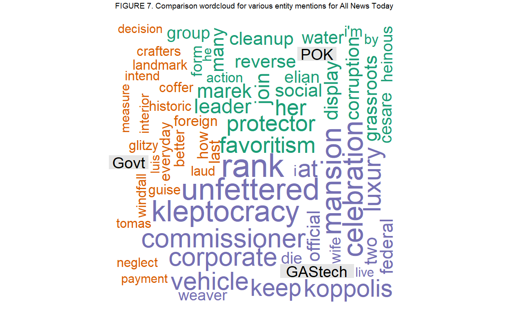

1. Task
The task is to use visual analytics to examine text data comprising:
- news articles;
- GAStech employee email headers;
- GAStech employee records; and
- GAStech employee resumes
in order to answer the following questions.
QUESTION 1: Characterize the news data sources provided. Which are primary sources and which are derivative sources? What are the relationships between the primary and derivative sources? Please limit your answer to 8 images and 300 words.
QUESTION 2: Characterize any biases you identify in these news sources, with respect to their representation of specific people, places, and events. Give examples. Please limit your answer to 6 images and 500 words.
QUESTION 3: Given the data sources provided, use visual analytics to identify potential official and unofficial relationships among GASTech, POK, the APA, and Government. Include both personal relationships and shared goals and objectives. Provide evidence for these relationships. Please limit your answer to 6 images and 400 words.
2. Data Preparation
Firstly, we will need to clean up and process the data into data tables to facilitate analysis. We will use a combination of R tools and manual inspection/editing to clean up the data.
There are three main datasets that will need to be processed and tidied up. The first set comprises the news articles. They will have to be collected into a data table for analysis, with key article details such as title, author, publish date, etc. extracted to facilitate analysis. The second set of data comprises the employee relationships to each other, as well as entities such as countries, organisations, persons outside GAStech, etc. The third and final set of data comprises email headers for two weeks worth of emails, along with labels of the type of emails.
2.1. News Articles
There is noise in the news article data, which includes incosistent line breaks, inconsistent formatting of article details such as dates, author names, etc., and inconsistent details provided per article. This has to be taken into account in processing the article data.
Step 2.1.1: Combine articles into single table for checking
We first begin by combining the article data into a single table to facilitate checks. We get the easy part out of the way and clean up the line breaks, by replacing all double line breaks with single line breaks with the code below.
articles <- readtext("MC 1/News Articles/*")
for (row in 1:nrow(articles)) {
# clean up the text of breaks
while (str_detect(articles[row, "text"],
"\n ")) {
articles[row, "text"] <- str_replace_all(articles[row,
"text"], "\n ", "\n")
}
while (str_detect(articles[row, "text"],
"\n\n")) {
articles[row, "text"] <- str_replace_all(articles[row,
"text"], "\n\n", "\n")
}
}
We then export the data for manual cleaning (i.e.edit the text directly in the csv file).
# export data for manual cleaning
write.csv(articles, "article_consol.csv")
Step 2.1.2: Load cleaned data and convert to article data into analysable dataframe
We now begin the task of converting the data into an analysable format.
First, we perform a first pass manual check of all the article text and manually clean up the data into a consistent format.Then we load in the cleaned data.
# load in cleaned data
article_data <- read.csv("article_consol_edit.csv")
Next, we convert the article data into an analysable dataframe to with the relevant article information separated out. We also ensure that the published dates are properly formatted for analysis.
# create dataframe to store article
# data
article_df <- data_frame(doc_id = rep("",
nrow(article_data)), source = rep("",
nrow(article_data)), title = rep("",
nrow(article_data)), author = rep("",
nrow(article_data)), location = rep("",
nrow(article_data)), published = rep("",
nrow(article_data)), text = rep("", nrow(article_data)))
# define the article details to be
# captured
headers <- c("source", "title", "author",
"location", "published")
for (row in 1:nrow(article_data)) {
article_text <- str_split(article_data$text[row],
"\n")
article_df$doc_id[row] <- article_data$doc_id[row]
for (i in 1:length(article_text[[1]])) {
detail <- str_trim(str_split_fixed(article_text[[1]][i],
":", 2))
# check if any of the string
# headers corresponds to
# article details, otherwise
# treat as body text
if (tolower(detail[1]) %in% headers) {
# some of the article text
# has 'LOCATION:',
# especially police blotter
# transcripts, this is to
# make sure only the first
# instance of location is
# used.
if (article_df[row, tolower(detail[1])] ==
"") {
# for multiple authors
# store authors as list
# so that they can be
# referenced separately
if (tolower(detail[1]) ==
"author") {
article_df[row, tolower(detail[1])] <- list(str_trim(str_split(detail[2],
",")))
} else if (tolower(detail[1]) ==
"published") {
date <- str_replace_all(str_replace_all(detail[2],
" ", " "), ",", "")
article_df[row, "published"] <- date
}
article_df[row, tolower(detail[1])] <- str_trim(detail[2])
} else {
# concatenate body text
article_df[row, "text"] <- paste(article_df[row,
"text"], article_text[[1]][i],
sep = "\n")
}
} else {
# concatenate body text
article_df[row, "text"] <- paste(article_df[row,
"text"], article_text[[1]][i],
sep = "\n")
}
}
}
# convert the published dates to dates
article_df$published <- as.Date(parse_date_time(article_df$published,
c("dmy", "mdy", "ymd")))
And were done with the news article data!
2.2. GAStech employee relationships
2.3. Email headers
3. Solutions (Approach & Answers)
Using the prepared data, we now answer the questions with the help of some meaningful visualisations.
3.1. Question 1
Characterize the news data sources provided. Which are primary sources and which are derivative sources? What are the relationships between the primary and derivative sources? Please limit your answer to 8 images and 300 words.
3.1.1. Solution Approach and Data Wrangling
There are two ways to detect derivative sources:
- presence of other news source name in the text (e.g.quoting or crediting another news source)
- same title and author as another article (e.g.reprinting or republishing a previous article from another news source)
STEP 1: Identify presence of other news source name
For the first approach, we will establish a listing of all news sources, and then check each article text for the presence of other news sources. We will use the detects to generate an adjacency matrix to visualise the links between articles. The relationship will be defined as follows:
- The primary source will be the news source quoted
- The derivative source is the article doing the quoting
- The relationship is defined as Quoting
news_sources <- c(unique(article_df$source))
# append one column for each news
# source to article df to establish an
# adjacency matrix
article_df[news_sources] <- NA
# mark TRUE whenever mentions of other
# news sources are detected
for (row in 1:nrow(article_df)) {
for (news_source in news_sources) {
if (article_df[row, "source"] !=
news_source) {
article_df[row, news_source] <- str_detect(article_df[row,
"text"], news_source)
} else {
article_df[row, news_source] <- FALSE
}
}
}
# convert the adjacency matrix into a
# list of edges (primary doc_id,
# primary source, derivative doc_id,
# derivative source, edge type)
edge_list_quote <- article_df[, c(1:2, 8:36)] %>%
pivot_longer(cols = !c(doc_id, source),
names_to = "primary_source")
# filter out the 'False' (i.e. no
# links)
edge_list_quote <- edge_list_quote %>%
filter(value)
# remove the 'value' column
edge_list_quote <- edge_list_quote[, c(1:3)]
# add the additional edge details
edge_list_quote$primary_doc_id <- "" #no doc_ids for quoted source, unfortunately
edge_list_quote$type <- "Quoting"
# rename the columns
edge_list_quote <- edge_list_quote %>%
rename(derivative_doc_id = doc_id, derivative_source = source)
# reorder the columns
edge_list_quote <- edge_list_quote[, c(4,
3, 1, 2, 5)]
# remove adjacency matrix from
# article_df
article_df <- article_df[, 1:7]
# rename the rows in article_df to
# doc_id for easier referencing
rownames(article_df) <- article_df$doc_id
datatable(edge_list_quote, caption = "TABLE 1. List of \"Quoting\" relationships",
rownames = F, colnames = c("Primary doc ID",
"Primary news source", "Derivative document ID",
"Derivative news source", "Relationship Type"))
There are only six quoting relationships detected in Step 1. We will see if we can derive more insight from the data in Step 2.
STEP 2: Identify articles with same title and author
First we compile a list of unique title-author combinations and extract the earliest publication of each combination. This list will be the basis for comparison against all the articles. Any articles published after the earliest publication is necessarily a reprint of the primary source.
#establish a list of unique article title/author combinations and record the earliest publish date and the source
article_df_grouped <- article_df %>%
group_by(title,author) %>%
arrange(published, by_group = TRUE) %>%
summarise(first_doc_id = first(doc_id),
published = first(published),
news_source = first(source),
text = first(text),
#the below details are for further analysis
count = n(), #count the number of times the title-author combo been published
all_source = list(unique(source)), #list the number of news sources that have used this article
all_doc = list(doc_id)) #list all the documents that share this article-author combination
datatable(article_df_grouped[,c(1:5,7:9)],
class = 'cell-border stripe',
caption = 'TABLE 2. List of unique article title-author combinations with number of repeats and sources that have published',
rownames = FALSE,
colnames = c("Unique title",
"Unique author",
"First document ID",
"First published date",
"First published news source",
"Repeat count",
"All sources that have published this article",
"All articles with this title-author combination"))
One quick observation that we can make is that there are several instances where articles share titles (i.e.exact match) with one combination with an authors name indicated but another combination without an authors name. This indicates that there might be situations either where one source is plagarising another or authors with one publication are re-using their work with another publication without using their bylines.
To further investigate this we shall extract the text of all articles which share the same title for comparison. We should note that if there is only one news source that has used this title (even if there are multiple articles), then this article could be a topic header for a developing story, with periodic updates being provided. In such a case, we ignore it as it does not show a primary-derivative source relationship.
#filter the article data to just those with identical titles, we will use this repeats table to extract the relevant article texts
article_df_repeats <- article_df %>%
group_by(title) %>%
summarise(count_articles = n(),
num_unique_sources = length(list(unique(source))[[1]]), #count the number of news sources that have used this article title
all_docs = list(doc_id) #list all the documents that share this article-author combination
) %>%
filter(num_unique_sources > 1)
coladd <- ncol(article_df_repeats)
article_df_repeats[(coladd+1):(coladd+max(article_df_repeats$num_unique_sources))] <- ''
for (i in 1:nrow(article_df_repeats)){
all_doc <- article_df_repeats$all_docs[i]
for (j in 1:length(all_doc[[1]])){
article_df_repeats[i,coladd+j] <- paste('DOC_ID: ',
filter(article_df,article_df$doc_id == all_doc[[1]][j])['doc_id'][[1]],
'\n',
#source
'SOURCE: ',
filter(article_df,article_df$doc_id == all_doc[[1]][j])['source'][[1]],
'\n',
#author
'AUTHOR: ',
filter(article_df,article_df$doc_id == all_doc[[1]][j])['author'][[1]],
'\n',
#published date
'PUBLISHED: ',
format(filter(article_df,article_df$doc_id == all_doc[[1]][j])['published'][[1]],'%d-%m-%Y'),
'\n',
#location
'LOCATION: ',
filter(article_df,article_df$doc_id == all_doc[[1]][j])['location'][[1]],
'\n',
'\n',
#text
filter(article_df,article_df$doc_id == all_doc[[1]][j])['text'][[1]],
'\n'
)
}
}
datatable(article_df_repeats[,c(1,5:10)],
class = 'cell-border stripe',
caption = 'TABLE 3. Articles with identical titles for inspection',
options = list(pageLength = 1,
height = 450,
width = 800),
rownames = FALSE,
colnames = c("Unique title",
"First article",
"Second article",
"Third article",
"Fourth article",
"Fifth article",
"Sixth article")) %>%
formatStyle(1:5, 'vertical-align'='top') %>%
formatStyle(1:5, 'text-align' = 'left')
Briefly, from comparing some of the text in the above table, it appears that Petrus Gerhard is recycling articles that he writes for Homeland Illumination for All News Today (simply shortening the article and changing one or two words for All News Today), and often on the same day. Marcella Trapani and Eva Thayer are doing similar at International News while officially writing for Kronos Star. There are many other cases, indicating that this Shadow Author phenomenon is probably much more widespread than previously expected. This warrants deeper investigation!!
To detect Shadow Author relationships, we will borrow a page from plagarism checker algorithms. We will use a simple substring matching approach to carry out this analysis. Simply put, the method involves the following:
- Breakdown each document into a series of n-grams. n should be a medium length, ~5 to 10 words. Too long, and it wont capture situations where authors change one or two words. Too short, and we would miss word patterns. For this case, we choose n = 6.
- Calculate a similarity score, where 1 indicates that the entirety of document A is found in document B. The score is given by: \[ similarity (\text{doc A to doc B}) = \frac{\text{no. of n-grams in doc A found in doc B}}{\text{total number of n-grams in doc A}} \]
- Noting that the score is directional (i.e.similarity of A to B may be 1, but if B is a longer document then similarity of B to A will be < 1), we should designate the shorter document (higher similarity score) as the derivative source and the longer document (lower similarity score) as the primary. Not all forms of Shadow Author relationships will be so neat. From our manual review of the articles in the above sections, it is clear that some shadow authors mix and match paragraphs around. For simplicity, we will define a Shadow Author relationship based on the following:
- Links between documents are defined if at least one of the similarity scores is >0.5. This allows for some coincidental overlaps in n-grams. >0.5 similarity score means more than half of the n-grams in doc A can be found in doc B, and indicates that one of the articles might have been shadow authored.
- Document with the higher score will be designated as the derivative.
- Document with the lower score will be designated as the primary.
- Where multiple documents are linked (similarity score >0.1), the document with the lowest average similarity score will be designated as the primary source, and all others will be designated as derivative.
# breakdown the article text into
# n-grams 'fingerprints'
ngram_fp <- article_df[, c("doc_id", "text")] %>%
unnest_tokens(n - gram, text, token = "ngrams",
n = 6)
ngram_fp$count = 1
# create 'n-gram'-document matrix
ndm <- ngram_fp %>%
cast_tdm(n - gram, doc_id, count)
# calculate the similarity score
fp_similarity_mat <- crossprod_simple_triplet_matrix(ndm)/col_sums(ndm)
# create a reference similarity matrix
fp_similiarity_mat_ref <- fp_similarity_mat
The raw similiarity scores are not quite useful yet, we need to extract insight by determining which are the primary and derivative sources.
One interesting point to note, is the the n-gram method will be extremely useful in helping us to identify primary sources for the quoting relationships. This is because a quote from another article will show up as an n-gram similarity score (i.e.a few sentences or paragraphs matching the primary source). If the similarity score is very close to 1, then the article may be a reprint of an older article.
We incoprporate this insight into our analysis and use the n-gram similarity score to fill in the primary sources for our quoting relationships. A single article may quote multiple sources, so the rules for defining primary and derivative source is not the same as those for shadow authoring. We will instead check off all articles from the quoted news source that have some similarity with the derivative article (i.e.the article doing the quoting).
#utility code to reset the edge_list_quote
edge_list_quote$primary_doc_id <- ''
#clean up the matrix, we only want real relationships, not coincidental matches
for (i in 1:ncol(fp_similarity_mat)){
#sparse matrix, so only zoom in on those with similarity score
for (j in which(fp_similarity_mat[,i] >0)){
#check if the doc has quoted another article
if (rownames(fp_similarity_mat)[j] %in% unique(edge_list_quote$derivative_doc_id)){
#check if the corresponding article source matches the quote source, if not, then no relationship
#print(paste('Column: ',colnames(fp_similarity_mat)[i]))
#print(paste('Row: ',rownames(fp_similarity_mat)[j]))
if (article_df[colnames(fp_similarity_mat)[i],][2][[1]] == edge_list_quote[which(edge_list_quote$derivative_doc_id == rownames(fp_similarity_mat)[j])[1],][2][[1]]){
#if so, update the edge_list_quote with the primary source doc_id,
#check if there's already a doc_id in there, sometimes quote more than one source
if (edge_list_quote[which(edge_list_quote$derivative_doc_id == rownames(fp_similarity_mat)[j])[1],'primary_doc_id'] != ''){
new_row <- c(colnames(fp_similarity_mat)[i],
edge_list_quote$primary_source[which(edge_list_quote$derivative_doc_id == rownames(fp_similarity_mat)[j])[1]],
edge_list_quote$derivative_doc_id[which(edge_list_quote$derivative_doc_id == rownames(fp_similarity_mat)[j])[1]],
edge_list_quote$derivative_source[which(edge_list_quote$derivative_doc_id == rownames(fp_similarity_mat)[j])[1]],
#if similarity score is high, it means doc A is a reprint of doc B
ifelse(fp_similarity_mat[j,i] > 0.7,'Reprint','Quoting'))
edge_list_quote <- rbind(edge_list_quote,new_row)
} else {
edge_list_quote[which(edge_list_quote$derivative_doc_id == rownames(fp_similarity_mat)[j]),'primary_doc_id'] <- colnames(
fp_similarity_mat)[i]
edge_list_quote[which(edge_list_quote$derivative_doc_id == rownames(fp_similarity_mat)[j]),'type'] <- ifelse(
fp_similarity_mat[j,i] > 0.7,'Reprint','Quoting')
}
#no longer any need to reflect similarity if source is quoted, as it is now a "shadow" situation
fp_similarity_mat[j,i] <- 0
fp_similarity_mat[i,j] <- 0
} else {
#if not a quoting relationship, check if the score is within range
if ((fp_similarity_mat[j,i] > 0) & (fp_similarity_mat[j,i] < 0.5)){
#check if the inverse similarity is similarly low
#if both are low, link is coincidental, ignore by reducing both to 0
if (fp_similarity_mat[i,j] < 0.5){
fp_similarity_mat[j,i] <- 0
fp_similarity_mat[i,j] <- 0
}
}
}
} else {
#if not in list of articles that have quoted before, then go straight to inverse check
#check is score is within range
if ((fp_similarity_mat[j,i] > 0) & (fp_similarity_mat[j,i] < 0.5)){
#check if the inverse similarity is similarly low
#if both are low, link is coincidental, ignore by reducing both to 0
if (fp_similarity_mat[i,j] < 0.5){
fp_similarity_mat[j,i] <- 0
fp_similarity_mat[i,j] <- 0
}
}
}
}
}
# now we extract the relationships and
# label them, only the primary source's
# row will be labelled with a '1' for
# the corresponding derivative sources.
# first, copy the similarity matrix
fp_sim_copy <- fp_similarity_mat
for (i in 1:nrow(fp_sim_copy)) {
col_indices <- which(fp_similarity_mat[i,
] > 0)
if (length(col_indices) > 1) {
col_sums <- rep("", length(col_indices))
for (j in 1:length(col_indices)) {
col_sums[j] <- sum(fp_similarity_mat[,
col_indices[j]]) - 1
}
# doc A (row) in doc B (col) is
# the way the fp_similarity_mat
# is set out so the maxcol sum
# indicates the doc B in which
# most doc As are found and
# hence the primary source this
# checks if the current row is
# a primary source
if (col_indices[which.max(col_sums)] ==
i) {
# if yes, then we erase all
# the other links
for (k in 1:length(col_indices)) {
# all links should be
# zero
for (m in 1:length(col_indices)) {
fp_sim_copy[col_indices[m],
col_indices[k]] <- 0
}
# mark with 1 on the
# primary source line
fp_sim_copy[i, col_indices[k]] <- 1
}
}
}
}
# remove all the self similarities
for (i in 1:nrow(fp_sim_copy)) {
fp_sim_copy[i, i] <- 0
}
# extract only rows and cols with some
# marker in them
fp_sim_copy <- fp_sim_copy[which(row_sums(fp_sim_copy) >
0), which(col_sums(fp_sim_copy) > 0)]
# convert matrix to dataframe for
# pivoting
fp_sim_copy <- as.data.frame(fp_sim_copy)
# extract the rownames as a column for
# primary doc_id
fp_sim_copy$primary_doc_id <- rownames(fp_sim_copy)
# create the edge list for shadow
# authors
edge_list_shadow <- fp_sim_copy %>%
pivot_longer(cols = !primary_doc_id,
names_to = "derivative_doc_id") %>%
filter(value == 1)
# remove the 'value' column
edge_list_shadow <- edge_list_shadow[, c(1:2)]
# add the additional edge details
edge_list_shadow$primary_source <- ""
edge_list_shadow$derivative_source <- ""
for (i in 1:nrow(edge_list_shadow)) {
# extract primary news source from
# article_df
edge_list_shadow$primary_source[i] <- article_df[edge_list_shadow$primary_doc_id[i],
][2][[1]]
# extract derivative news source
# from article_df
edge_list_shadow$derivative_source[i] <- article_df[edge_list_shadow$derivative_doc_id[i],
][2][[1]]
}
edge_list_shadow$type <- "Shadow Authoring"
# reorder the columns
edge_list_shadow <- edge_list_shadow[, c(1,
3, 2, 4, 5)]
# remove shadow authoring relationships
# where the primary and derivative news
# sources are the same self referencing
# within a news source should not be
# considered shadow authoring
edge_list_shadow <- edge_list_shadow[-which(edge_list_shadow$primary_source ==
edge_list_shadow$derivative_source),
]
Having completed the edge list for Shadow Authoring relationships, we now turn our attention to tidying up the Quoting edge list. We then merge together the edge lists and prepare to generate a Sankey diagram to visualise the relationships.
# expand edge list with article details
# add the additional edge details
edge_list$primary_year <- ""
edge_list$primary_author <- ""
edge_list$derivative_year <- ""
edge_list$derivative_author <- ""
edge_list$similarity <- ""
for (i in 1:nrow(edge_list)) {
# extract primary news source from
# article_df
edge_list$primary_year[i] <- year(article_df[edge_list$primary_doc_id[i],
][6][[1]])
edge_list$primary_author[i] <- article_df[edge_list$primary_doc_id[i],
][4][[1]]
# extract derivative news source
# from article_df
edge_list$derivative_year[i] <- year(article_df[edge_list$derivative_doc_id[i],
][6][[1]])
edge_list$derivative_author[i] <- article_df[edge_list$derivative_doc_id[i],
][4][[1]]
# extract the similarity score
edge_list$similarity[i] <- fp_similiarity_mat_ref[which(rownames(fp_similiarity_mat_ref) ==
edge_list$derivative_doc_id[i]),
which(colnames(fp_similiarity_mat_ref) ==
edge_list$primary_doc_id[i])]
# if primary and derivative author
# are not null and are the same,
# the author is not hiding change
# relationship to reprint
if ((edge_list$primary_author[i] != "")) {
if (edge_list$primary_author[i] ==
edge_list$derivative_author[i]) {
edge_list$type[i] = "Reprint"
}
} else {
# if the primary has no author
# and the derivative has an
# author, then the shadow
# authoring relationship should
# be inverted the author could
# have added details in the
# shadow article not included
# in the original
if (edge_list$derivative_author[i] !=
"") {
# store the primary values
derivative_doc_id <- edge_list$primary_doc_id[i]
derivative_source <- edge_list$primary_source[i]
derivative_year <- edge_list$primary_year[i]
derivative_author <- edge_list$primary_author[i]
# set primary values as the
# previously derivative
# values
edge_list$primary_doc_id[i] <- edge_list$derivative_doc_id[i]
edge_list$primary_source[i] <- edge_list$derivative_source[i]
edge_list$primary_year[i] <- edge_list$derivative_year[i]
edge_list$primary_author[i] <- edge_list$derivative_author[i]
# set the derivative values
# as the previously primary
# values
edge_list$derivative_doc_id[i] <- derivative_doc_id
edge_list$derivative_source[i] <- derivative_source
edge_list$derivative_year[i] <- derivative_year
edge_list$derivative_author[i] <- derivative_author
}
}
}
# drop those where primary year >
# derivative year
edge_list <- edge_list[-which(edge_list$primary_year >
edge_list$derivative_year), ]
We then prepare the data for visualisation.
# summarise data by news source
edge_list_bysrc <- edge_list %>%
group_by(primary_source, derivative_source,
type) %>%
summarise(freq = n())
# summarise data by author
edge_list_byauth <- edge_list %>%
group_by(primary_author, derivative_author,
type) %>%
summarise(freq = n())
# split data before and after 2005
edge_list_bysrc_bef2005 <- edge_list %>%
filter(derivative_year < 2005) %>%
group_by(primary_source, derivative_source,
type) %>%
summarise(freq = n())
edge_list_bysrc_aft2005 <- edge_list %>%
filter(derivative_year > 2004) %>%
group_by(primary_source, derivative_source,
type) %>%
summarise(freq = n())
3.1.2. Answer
From Figure 1 above, it can be seen that the bulk of the similarity between sources is due to Shadow Authoring, where authors write for multiple news organisations without using their names. It is perhaps not surprising, given that Kronos is a very small country with a population of only 783,305 people, but supporting a media industry of 29 different news sources. From Figure 1, it appears that News Online Today is the biggest beneficiary of such shadow authoring, with primary sources ranging from Homeland Illumination, International Times, Kronos Star, The Abila Post, and The World. News Online Today appears to also be the largest single news agency in Kronos by article volume (see Figure 2 below), which probably indicates that they may also be one of the mainstream news sources in Kronos, which is why they are attractive to shadow writers.
Assessing the types of relationships by author (see Figure 3 below), we find that most of the authors exclusively use shadow authoring, with only Petrus articles being reprinted with his name in other sources. Note that there are many articles without author names.
One possible reason for this reluctance to explicitly declare their authorship could be that authors are deliberatly attempting to use a more reputable news source (e.g.News Online Today) to spread their message without compromising said news source by associating openly with it. Since 2005 (based on materials provided), the Protectors of Kronos (POK) have gotten increasingly militant and government crackdowns have similarly stepped up. Considering the political situation, we can compare the evolving dynamics of primary-derivative source relationships before 2005 and after 2005. From Figures 4a and 4b below, we can see that while shadow authoring relationships have always been prevalent, after 2005, no authors have published articles in other news sources under their own names any more.


3.2. QUESTION 2
Characterize any biases you identify in these news sources, with respect to their representation of specific people, places, and events. Give examples. Please limit your answer to 6 images and 500 words.
3.2.1. Solution Approach and Data Wrangling
Visualising bias will require more in depth analysis of the article texts. We will used frequency-based analysis to characterise the articles for bias detection. First, we need to identify entities which we wish to study, namely:
- Protectors of Kronos
- Kronos Government
- GAStech
We will define some keywords to label our dataset accordingly. Articles will be indicated as making a representation about each of these entities if certain keywords are mentioned in the article.
# define key words
entities <- c("POK", "Govt", "GAStech")
keywords1 <- c("Protectors of Kronos", "POK",
"Elian Karel", "Silvia Marek", "Mandor Vann",
"Isia Vann", "Lucio Jakab", "Lorenzo Di Stefano")
keywords2 <- c("government", "ministry",
"minister", "president", "military",
"police", "mayor")
keywords3 <- c("GAStech")
keywords <- list(keywords1, keywords2, keywords3)
article_df[entities] <- NA
for (i in 1:nrow(article_df)) {
text <- str_to_lower(gsub("[[:punct:]]",
"", article_df$text[i]))
for (j in 1:length(keywords)) {
for (k in 1:length(keywords[[j]])) {
if (str_detect(text, str_to_lower(keywords[[j]][k]))) {
article_df[i, 7 + j] <- TRUE
} else {
if (isNA(article_df[i, 7 +
j])) {
article_df[i, 7 + j] <- FALSE
}
}
}
}
}
Now, we turn our attention to the sentiment analysis.
First, we will convert our corpus of articles into a document-term matrix, using text frequency - inverse document frequency (TF-IDF) to fill in the values. TF-IDF is used because it supresses words that appear commonly across all documents through the inverse document frequency term. This eliminates the need to specify stopwords to remove from the corpus, which is tedious and might not be too accurate as some stopwords also depend on the unique characteristics of each corpus.
We will also lemmatize the words using the textstem package to better capture the meaning of each document by converting various forms of words to their root word (e.g.running, ran, and run will be reduced to run). Another approach is stemming, where t he ends of words are truncated based on heuristics to remove derivational and inflectional affixes (e.g.-s, -ed, -es, -ing, -tion). Past research (di Nanzio, Vezzani, 2018) has shown that lemmatization and stemming are comparable in terms of performance. We will go with lemmatization for this project because the output are base words, which are more understandable.
We will also remove numerics so that we can avoid cluttering the document-term matrix and zoom in on word meanings to analyse sentiment.
dtm <- article_df[, c("doc_id", "text")] %>%
unnest_tokens(word, text)
# lemmatize words
dtm$word <- lemmatize_words(dtm$word)
# establish word counts
dtm <- dtm %>%
count(doc_id, word, sort = TRUE)
# remove numerics
dtm <- dtm[-which(grepl("^[[:digit:]]+",
dtm$word)), ]
# calculate tf-idf
dtm <- dtm %>%
bind_tf_idf(word, doc_id, n)
# cast dtm
dtm <- dtm %>%
cast_dtm(doc_id, word, tf_idf)
We plot a wordcloud (see Figure 5 below) to compare the common words used when each of the three entities are mentioned in an article. From the word cloud, it can be seen that the words commonly used when talking about the government or GAStech are largely neutral, while those used in describing POK have more negative connotations (e.g.violence, vandalism, assault).
However, we now need to characterise the individual words in order to capture sentiment, so that we can apply an analysis on each news source to identify bias. Our approach will be as follows:
- Extract and manually annotate the vocabulary to characterise words as follows:
- Negative to POK (e.g.terrorist, vandalism, riot, loot, criminal)
- Positive to POK (e.g.activist, protest, demonstration, peaceful)
- Negative to Government (e.g.favoritism, corruption, kleptocracy)
- Positive to Government (e.g.investment, development)
- Negative to GAStech (e.g.toxic, acidic, contamination)
- For each set of entity mentions:
- Summarise the document-term matrix by news source, taking the column means to get the average sentiment of the articles produced by the news source mentioning said entity.
- Multiply the td-idf score for each word by the annotated word sentiment score (-1 for negative, 0 for neutral, 1 for positive).
- Sum the sentiment scores for all words for each news source. That will be the sentiment score for the news source.
- Normalise the sentiment scores, by computing the z-statistic. This is to ensure that the relative favorability of a news source for each entity is comparable across entities
- Visualise the relative favorability of each news source with respect to each entity.
After manual annotation, we will create a reference dictionary with the sentiment tagged to each word for data wrangling.
# load in annotated vocabulary
vocab_annotated <- read.csv("vocab_annotated.csv")
# remove old index
vocab_annotated <- vocab_annotated[, 2:5]
# convert NA to 0
vocab_annotated[is.na(vocab_annotated)] <- 0
# remove neutral words
vocab_annotated <- vocab_annotated[which(row_sums(vocab_annotated[,
2:4]) != 0), ]
# create a reference dictionary
ref_dict <- Terms(dtm)
# populate the ref dictionary
for (i in 1:length(entities)) {
new_row <- rep(0, length(ref_dict))
for (j in 1:nrow(vocab_annotated)) {
new_row[which(ref_dict == vocab_annotated[j,
1])] <- vocab_annotated[j, i +
1]
}
ref_dict <- rbind(ref_dict, new_row)
}
# remove the first row
ref_dict <- ref_dict[-1, ]
# set column names to be the terms
colnames(ref_dict) <- Terms(dtm)
rownames(ref_dict) <- entities
We then compute the sentiment scores for each news source with respect to each entity.
# first create subset dtms for each
# group of articles
dtm_pk <- dtm[which(rownames(dtm) %in% article_df$doc_id[article_df$POK]),
]
dtm_gv <- dtm[which(rownames(dtm) %in% article_df$doc_id[article_df$Govt]),
]
dtm_ga <- dtm[which(rownames(dtm) %in% article_df$doc_id[article_df$GAStech]),
]
# define function to summarise the dtm
# by news source (need to reference
# from the article_df table)
summarise_bysrc <- function(dtm) {
for (i in 1:length(news_sources)) {
if (i == 1) {
dtm_bysrc <- col_means(dtm[which(rownames(dtm) %in%
article_df$doc_id[which(article_df$source ==
news_sources[i])]), ])
} else {
dtm_bysrc <- rbind(dtm_bysrc,
col_means(dtm[which(rownames(dtm) %in%
article_df$doc_id[which(article_df$source ==
news_sources[i])]), ]))
}
}
# set the col and row names
colnames(dtm_bysrc) <- Terms(dtm)
rownames(dtm_bysrc) <- news_sources
return(dtm_bysrc)
}
# perform summaries by news source
dtm_pk_bysrc <- summarise_bysrc(dtm_pk)
dtm_gv_bysrc <- summarise_bysrc(dtm_gv)
dtm_ga_bysrc <- summarise_bysrc(dtm_ga)
sent_scores <- data_frame(news_source = news_sources,
POK = rep(0, length(news_sources)), Govt = rep(0,
length(news_sources)), GAStech = rep(0,
length(news_sources)))
# define function to perform
# element-wise multiplication with the
# sentiment vocab
get_sentiment <- function(dtm, ent, sent_scores) {
for (i in 1:nrow(dtm)) {
sent_scores[i, ent + 1] <- sum(dtm_pk_bysrc[i,
] * as.numeric(ref_dict[ent,
]))
}
return(sent_scores)
}
# perform element-wise multiplication
# with the sentiment vocab
sent_scores <- get_sentiment(dtm_pk_bysrc,
1, sent_scores)
sent_scores <- get_sentiment(dtm_gv_bysrc,
2, sent_scores)
sent_scores <- get_sentiment(dtm_ga_bysrc,
3, sent_scores)
# normalise the sent_scores
for (i in 2:ncol(sent_scores)) {
mean <- mean(as.numeric(as.matrix(sent_scores)[,
i]))
sd <- sd(as.numeric(as.matrix(sent_scores)[,
i]))
for (j in 1:nrow(sent_scores)) {
sent_scores[j, i] <- (sent_scores[j,
i] - mean)/(sd)
}
}
# pivot for plotting
sent_scores <- pivot_longer(sent_scores,
cols = !news_source, names_to = "entity",
values_to = "sent_score")
3.2.2. Answer
Based on the results in Figure 6 below, we find that most news sources are more neutral in stance. In general there is greater variability in favorability for GAStech and POK, while favorability ratings for the government tend to be clustered in a tight band, indicating that most news sources tend to report objectively or slightly favorably on the government. This is perhaps to be expected, as the government is usually able to exert some influence over news media in a country.
It is noted that Modern Rubicon is the most vehemently anti-government news source, while it is also the most pro-POK news source. This is not surprising, and Modern Rubicon could have links with the POK organisation and senior leadership.

To validate our findings, lets perform a wordcloud of Modern Rubicons articles regarding each entity and see what kind of words they tend to use regarding each entity.

3.2.2. Answer
3.3. QUESTION 3
Given the data sources provided, use visual analytics to identify potential official and unofficial relationships among GASTech, POK, the APA, and Government. Include both personal relationships and shared goals and objectives. Provide evidence for these relationships. Please limit your answer to 6 images and 400 words.
3.3.1. Solution Approach and Data Wrangling
3.3.2. Answer
References